Produkter
Nyheder i solen
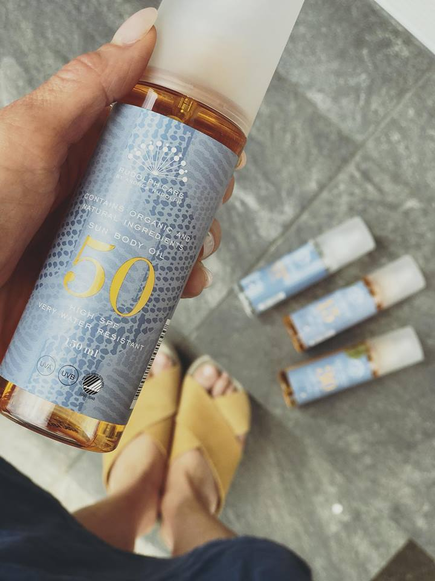
Sun Body Oil SPF 50 er en luksuriøs kropsolie, der effektivt beskytter din hud mod solens skadelige UVA- og UVB-stråler. Sun Body Oil er vandafvisende og har en høj koncentration af antioxidanter, der modvirker ældningstegn og hjælper med at bevare hudens naturlige elasticitet. Olien indeholder aktive og plejende olier fra raps, solskikke og hvedekim, der tilfører fugt til huden- uden at fedte eller udtørre. Sun Body Oil har en sart duft af sommer og giver din hud en smuk og mættet glød i solen.
Psst... Sun Body Oil fås også med SPF 15 og 30.
Nyhed fra @rudolphcare Til dine hænder
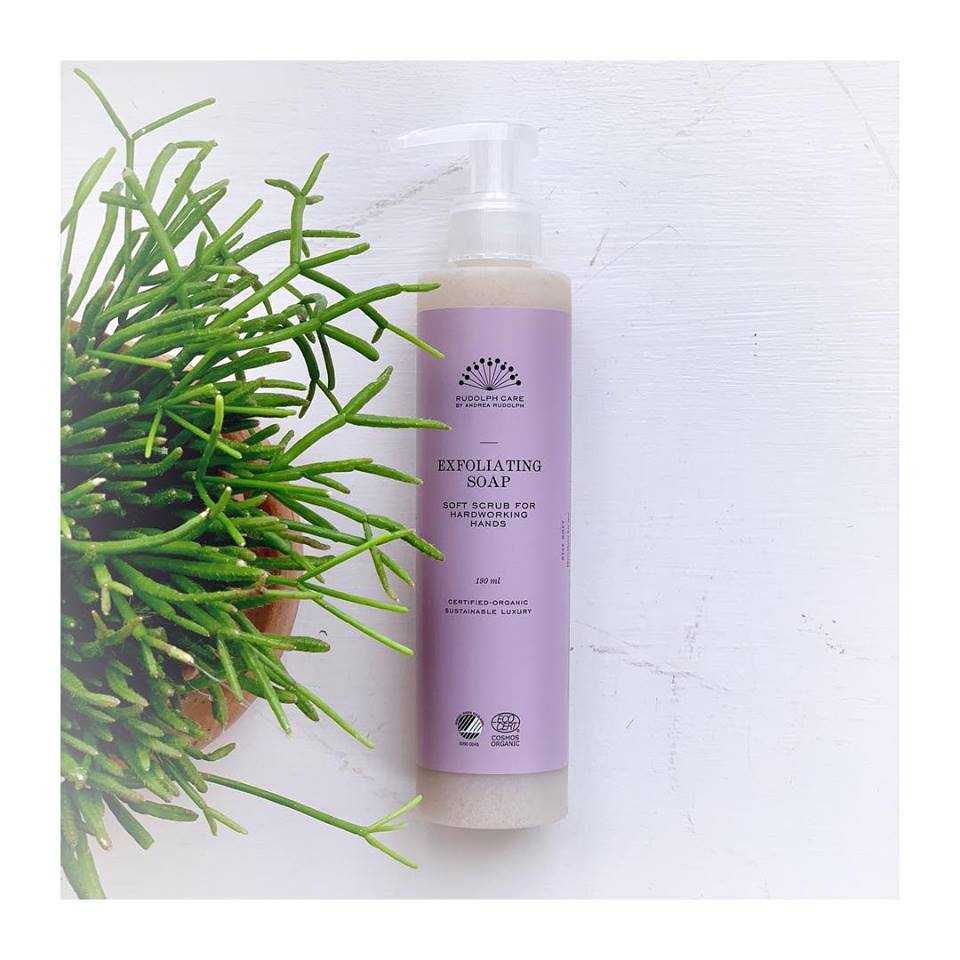
Luksuriøs, skrubbende og plejende håndsæbe, som efterlader huden ren og blød.
Abrikoskerne-granulat og fine små skrubbekorn fra det naturlige silica-mineral eksfolierer huden let og fjerner skånsomt døde hudceller fra overfladen af huden, mens blodcirkulationen stimulereres.
Aktive og nærende ingredienser plejer dine hænder; acaibærrets høje koncentration af antioxidanter fra essentielle fedtsyrer, vitaminer og mineraler forebygger aldringstegn og virker styrkende på huden, mens aloe vera genopretter hudens elasticitet og bevarer dens naturlige fugtighed.
Exfoliating Soap er tilsat et strejf af mentol, der virker forfriskende på huden og forkæler din duftesans.
DKK 145,-
Nyhed fra Karmameju
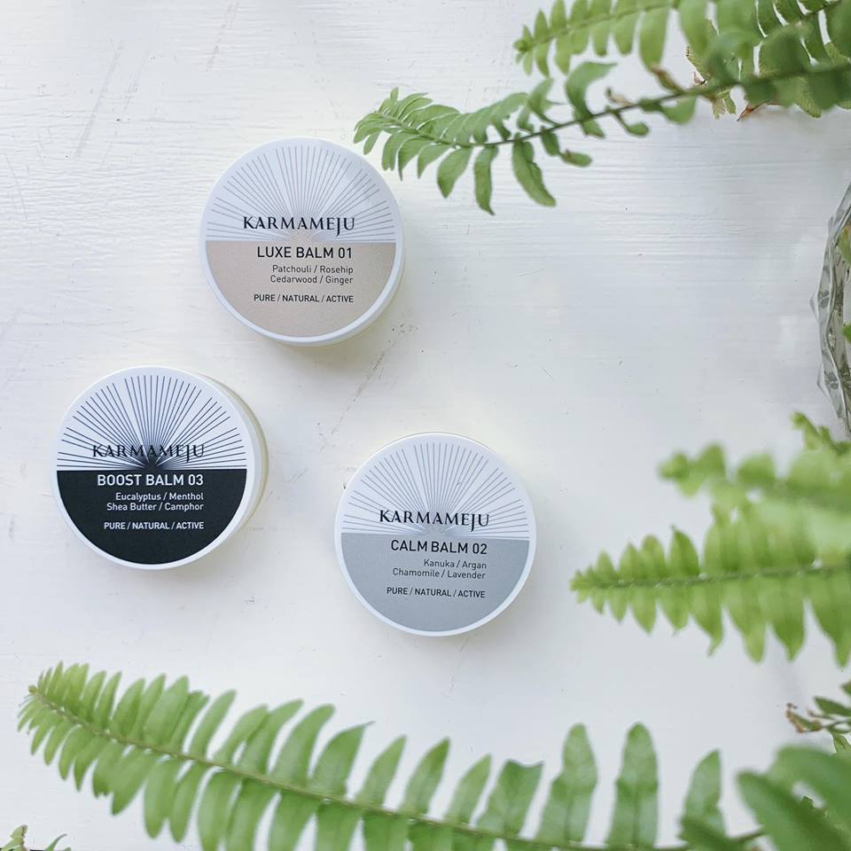
VITALIZE/ NURTURE / ENERGIZE
BALM BOX / X3
De tre multifunktionelle Karmameju balms LUXE 01, CALM 02, BOOST 03 – nu i limited edition sampak i praktisk 20 ml. rejse-, taske-, og lommestørrelse.
DKK 299,- 3 x 20 ml.
BLAZE / POWER POTION 03
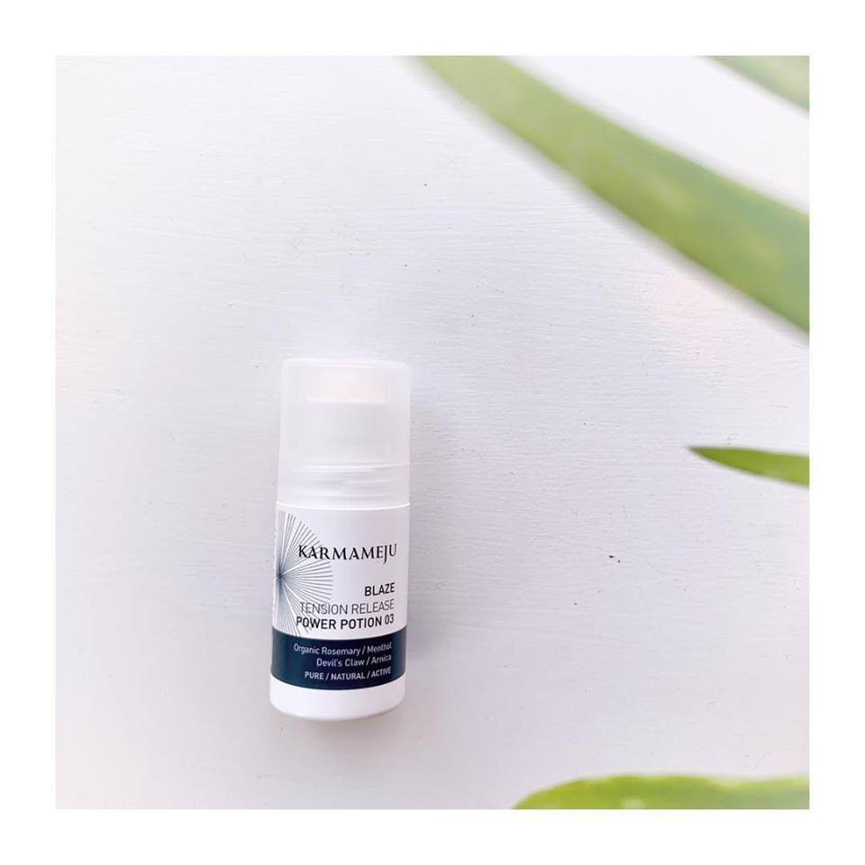
En naturlig, aromaterapeutisk roll-on, der er udviklet til at stimulere, pleje og lette spændinger med dynamiske, økologiske og virkningsfulde ingredienser.
DKK 179,- 50 ml.
HERO / pH SOLUTION 02
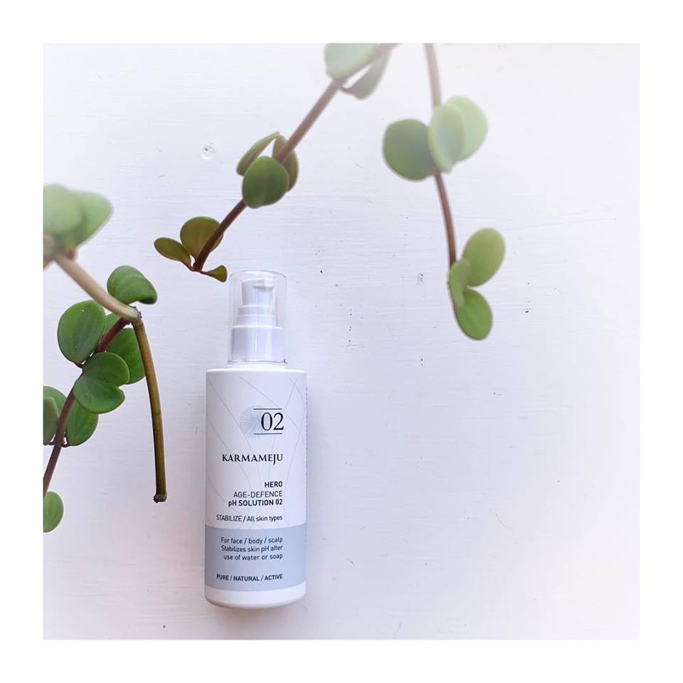
DKK 199,- 200 ml.
SOFT / DEODORANT 02
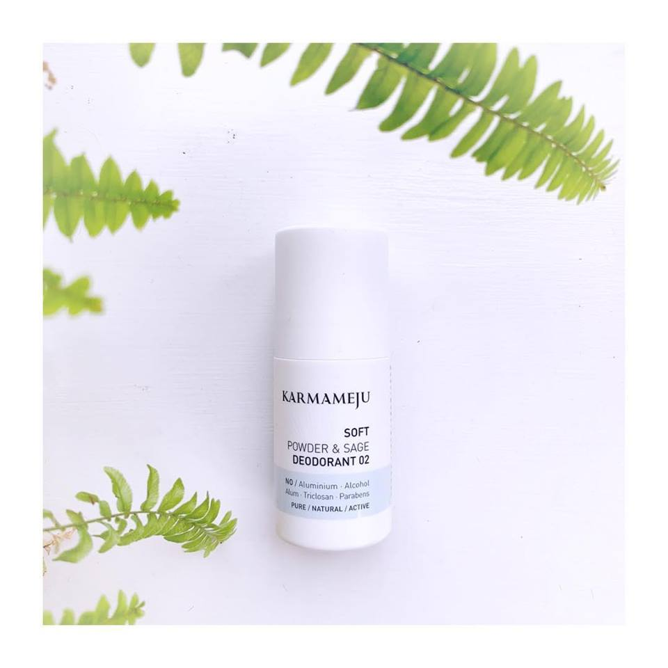
En effektiv, naturlig og mild unisex deodorant som kontrollerer lugtgener uden at hindre kroppens vitale udrensende funktioner. Anbefales til alle.
DKK 169,- 50 ml.
The Body Oil
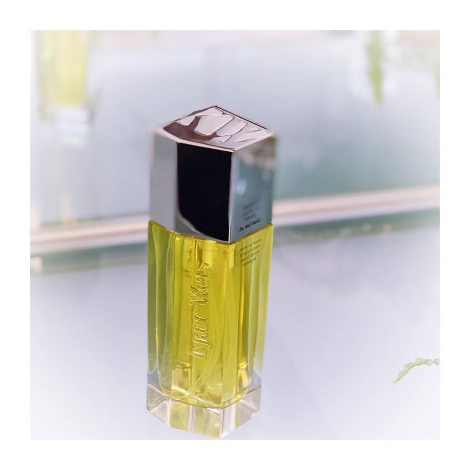
@kjaerweis har udvidet sortimentet til også at inkludere en Body Oil.
Nyd den delikate duft af citrusblomster, mens din hud bliver gennemfugtet af super kraftfulde ingredienser som Ginko Biloba-, Moringa-, Sesam- og Solsikkeolie.
Din hud kommer til at stråle og den økologiske koldpressede olie absorberes hurtigt og forhøjer mikrocirkulation i huden, så den både synes og føles blød og glat.
DKK 849,- 100 ml.
ACAI Body Lotion
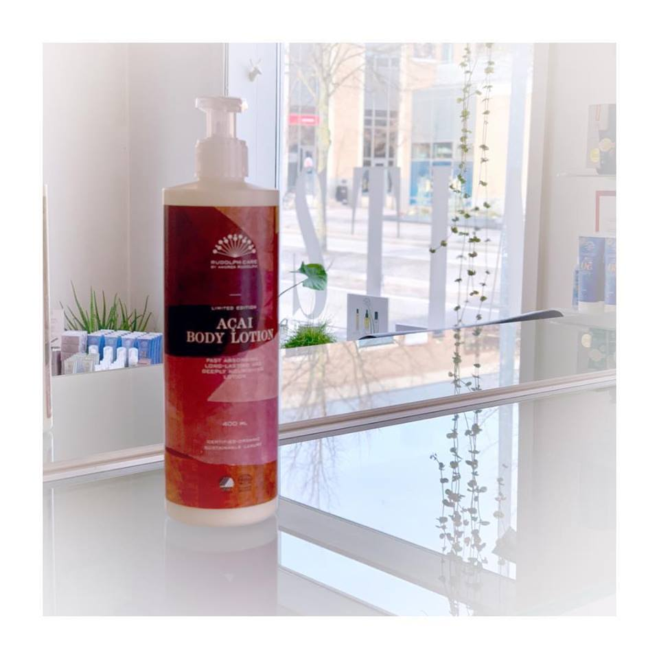
Body Lotion Limited Edition fra @rudolphcare - print af Cecilie Elisabeth Rudolph. BODY LOTION LIMITED EDITION.
DKK 495,- 400 ml.
Gaveæske - Sparkle like a star
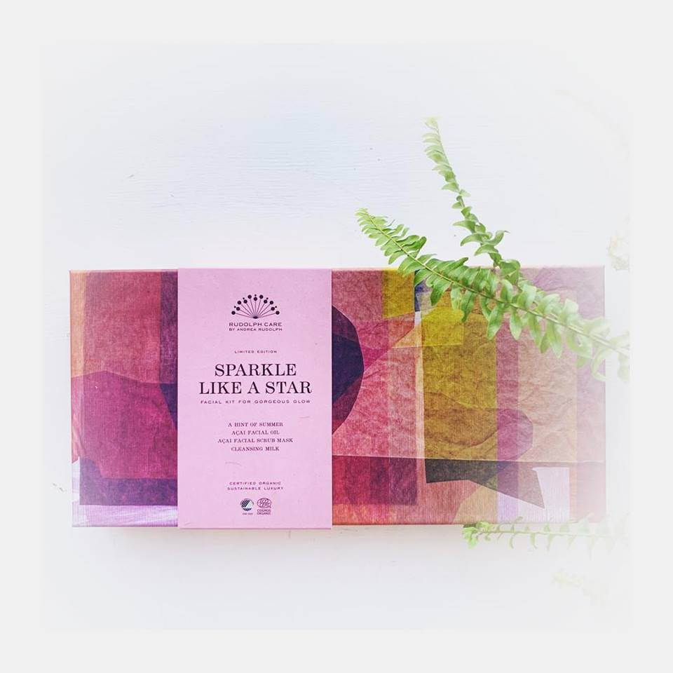
Sparkle Like a Star er pakket med fire produkter til ansigtet, der giver smuk glød til tør vinterhud med mild rens, prisvindende ansigtsolie og økologisk selvbruner.
Sparkle like a star indeholder:
- Acai Anti-ageing Facial Oil (15 ml) En intensiv fugtbooster: Ren, koncentreret acaiolie, som er rig på vitaminer, essentielle fedtsyrer og antioxidanter, der styrker og giver huden glød indefra.
- A Hint of Summer (50 ml) Økologisk selvbruner, som skaber gylden glød og gør det nemt at opbygge en let, solbrun farve i både ansigt og på kroppen.
- Acai Facial Scrub Mask (25 ml) Eksfolierende peeling til ansigtet, der samtidigt virker som fugtgivende maske med plejende olier og sheasmør.
- Acai Cleansing Milk (25 ml) En nænsom, plejende rensemælk, som effektivt fjerner din makeup og øjenmakeup – helt uden parfume.
DKK 995,-
Værdi DKK 1.310,-
O&M Desert Dry Volumising Dry Texture Spray
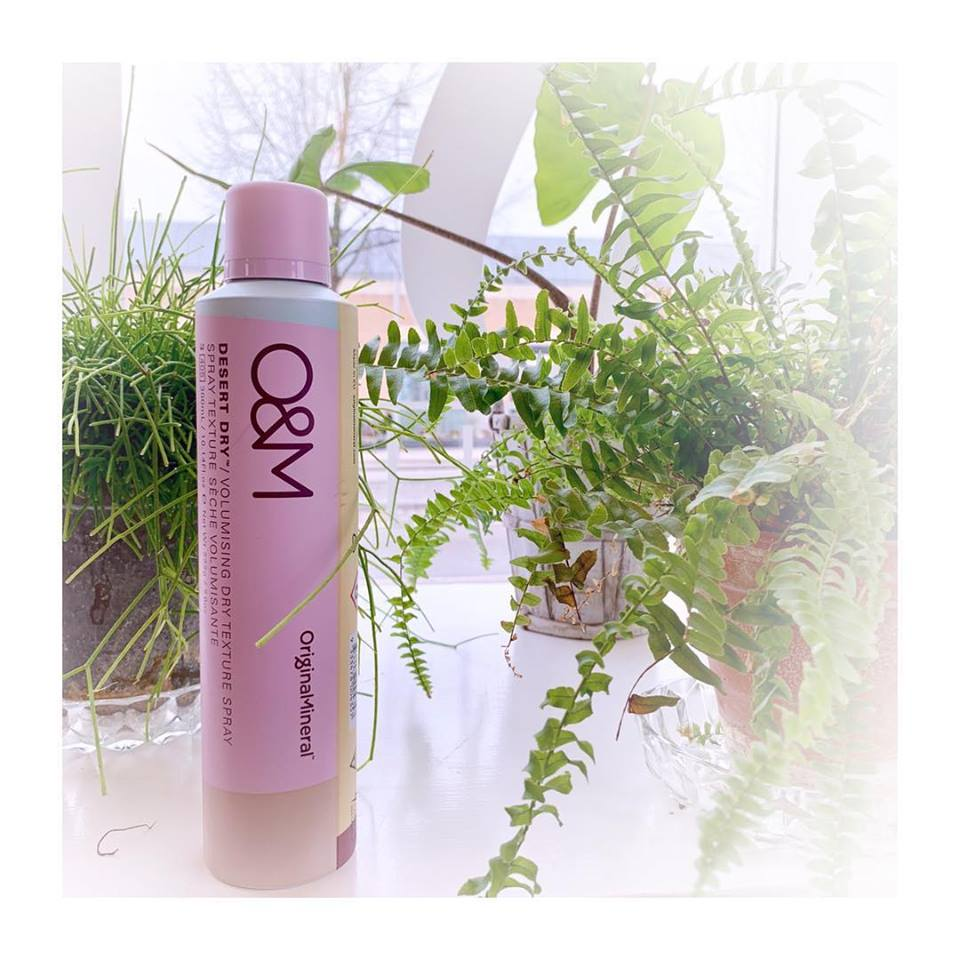
En tør, volumengivende tekstur spray. Sprayen er god til opbygning af tekstur, fylde og volumen og til at løfte håret. Indeholder blandt andet udtræk af Lilly Pilly, der er en australsk plante, der har et højt indhold af C-vitamin og giver håret fylde.
O&M Desert Dry Volumising Dry Texture Spray egenskaber
- giver fylde og volumen
- giver tekstur
- indeholder blandt andet udtræk af ørkenplanten Quandong, der nærer håret
- løfter håret
- uden parabener
Sådan bruger du O&M Desert Dry
- ryst inden brug
- spray på håret fra ca 30 cm afstand
- arbejd ind i håret med fingrene eller en børste.
DKK 198,- 300 ml.
Årets eksklusive gaveæske
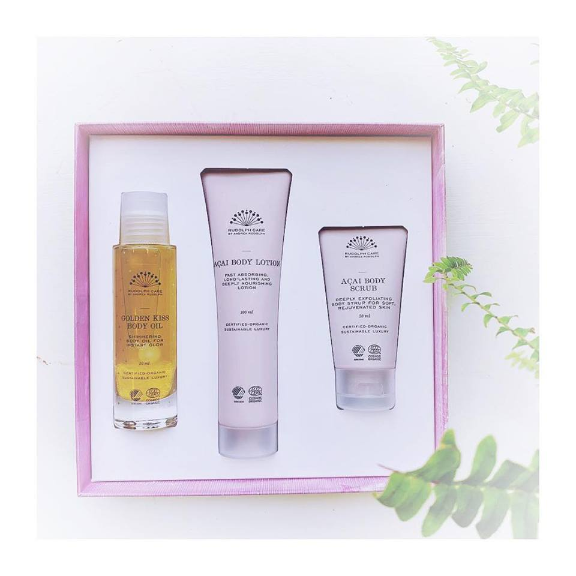
#BeBodylicious gør kroppen glødende, blød og lækker med eksfolierende scrub, nærende creme og glitrende olie. Til dig – eller én af dine kære, der skal forkæles med ren kærlighed til huden.
Med Be Bodylicious får du:
- Acai Body Scrub (50 ml) En eksfolierende gel, der nænsomt fjerner døde hudceller, stimulerer cellefornyelsen og tilfører pleje og fugt. Resultatet er en glat, blød hud med fornyet energi - og en smuk glød.
- Acai Body Lotion (100 ml) Hurtigtabsorberende og langtidsnærende bodylotion fyldt med naturlige ingredienser af højeste kvalitet. Holder huden blød og fugtmættet hele dagen - uden at fedte.
- Golden Kiss Body Oil (50 ml) Eksklusiv og nærende kropsolie med et strejf af gyldent glimmer fra det naturlige mineral mica. Brug den ovenpå Body Lotion for ekstra smuk, strålende glød.
DKK 495,-
Værdi DKK 725,-
Karmameju gaveæske
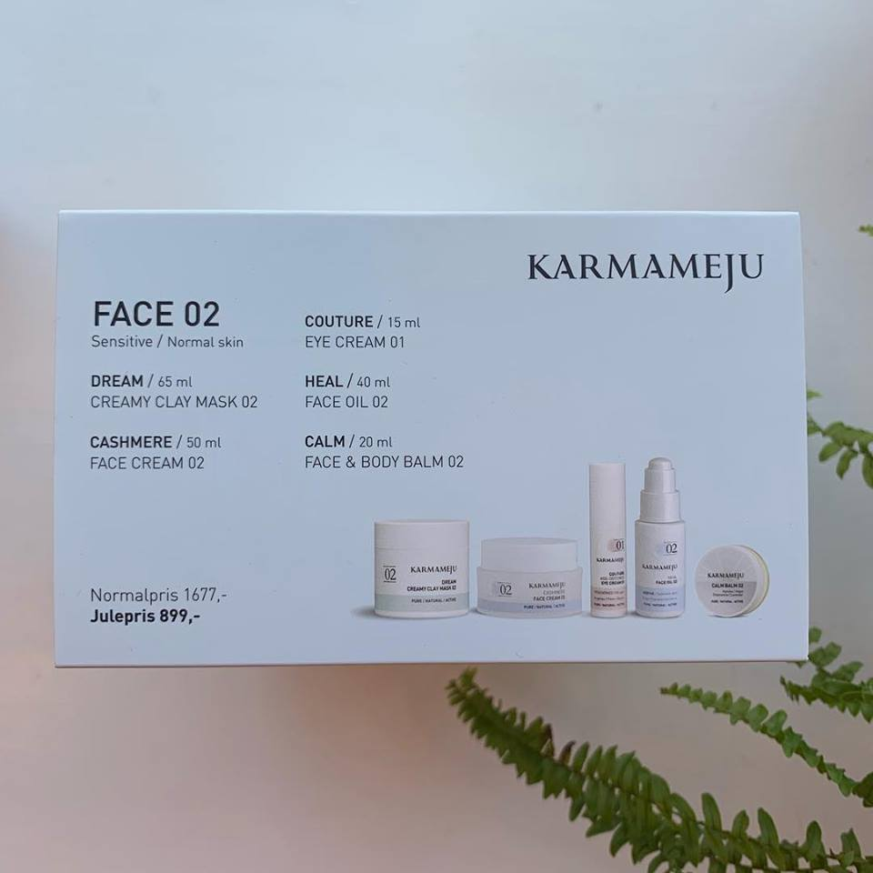
- DREAM creamy clay mask sammentrækker og beroliger med hvid kaolinler og antioxidante guaiazulene.
- CASHMERE face cream fylder og beskytter med klinisk dokumenteret hyaluronsyre og ingefærekstrakt.
- HEAL face oil genopbygger og reducerer rødme og inflammation.
- COUTURE eye cream opstrammer og forfiner øjenomgivelserne.
- Multifunktionelle CALM balm beroliger - og kan med fordel anvendes som leave-on fugtmaske samt beskyttelse i frostvejr.
Julepris DKK 899,-
Normalpris DKK 1.677,-
Æsken er hvid med skuffe og med smukt, diskret tone i tone Karmameju logo. Vi ønsker sådan at passe på miljøet, og laver derfor æskerne så eksklusive, at vi håber, de vil blive brugt til opbevaring af smykker, hudpleje, kontorartikler og lignende.
FACE-æskerne er limited edition - en oplagt mulighed for at prøve hele serier fra Karmameju til næsten halv pris. INDEHOLDER:
- DREAM creamy clay mask 02 / Nyhed
- CASHMERE face cream 02
- HEAL face oil 02
- COUTURE eye cream 01
- CALM balm 02 travel size
GAVEÆSKE FRA ZARKO
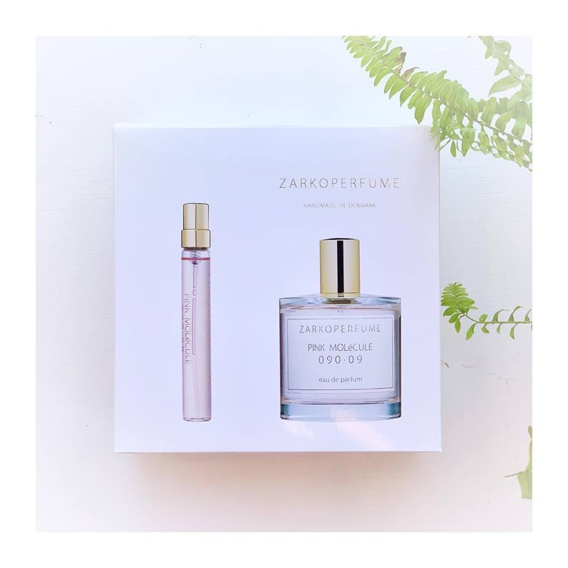
Zarko Pink Molécule Eau De Parfum Twin Set.
Sættet indeholder:
- Eau de Parfum (100 ml)
- Eau de Parfum Penspray (10 ml)
DKK 800,-
Værdi DKK 1.050,-
GAVEÆSKE
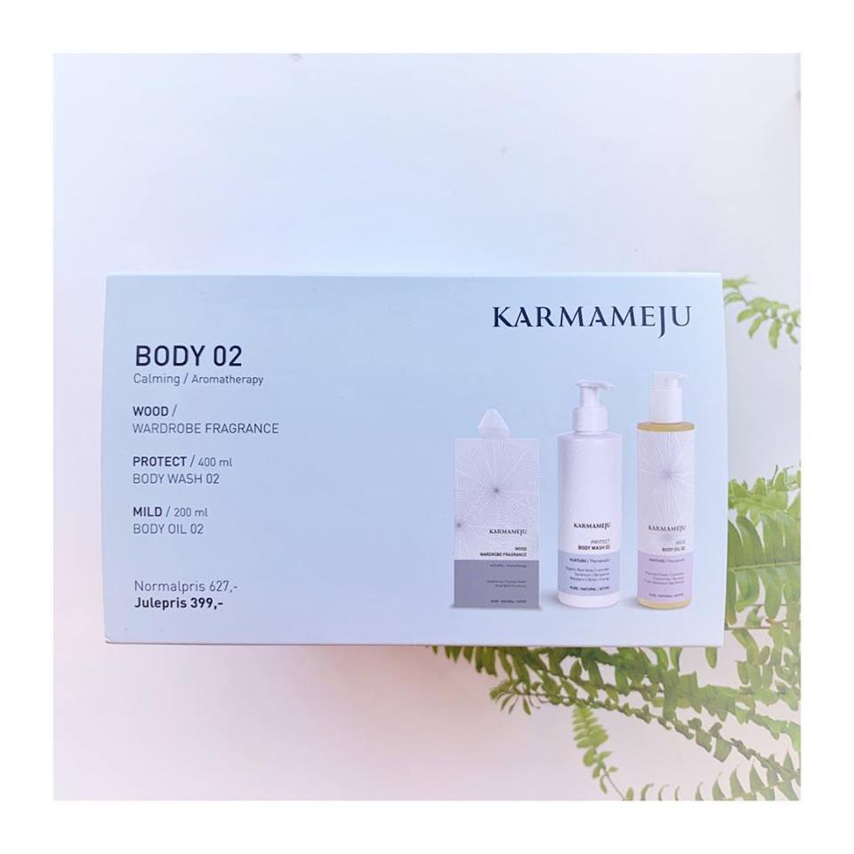
Væk sanserne i badet med den milde PROTECT body wash i vores store limited edition 400 ml. størrelse, som kun findes i denne gaveæske. Plej huden med kamille, lavendel, magnolia og lindeblomst med MILD body oil, der hydrerer, nærer og beroliger. WOOD wardrobe fragrance afgiver krydrede og varme dufte fra cedertræ, appelsin og nellike i garderoben, sommerhuset, båden, kælderen og på loftet.
Julepris DKK 399,-
Normalpris DKK 627,-
Æsken er hvid med skuffe, og med smukt, diskret tone i tone Karmameju logo. Vi ønsker sådan at passe på miljøet og laver derfor æskerne så eksklusive, at vi håber, de vil blive brugt til opbevaring af smykker, hudpleje, kontorartikler og lignende.
INDEHOLDER:
- MILD body oil 02
- PROTECT body wash 02, 400 ml. / Limited edition
- WOOD wardrobe fragrance